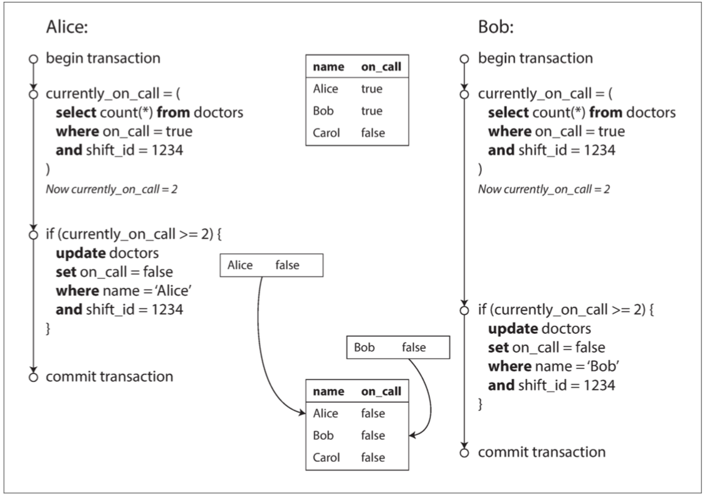
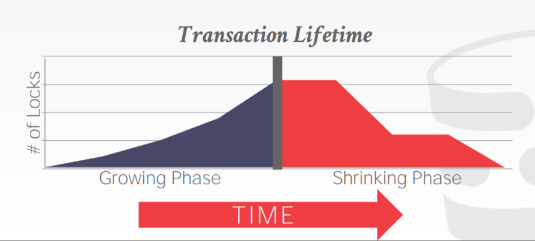
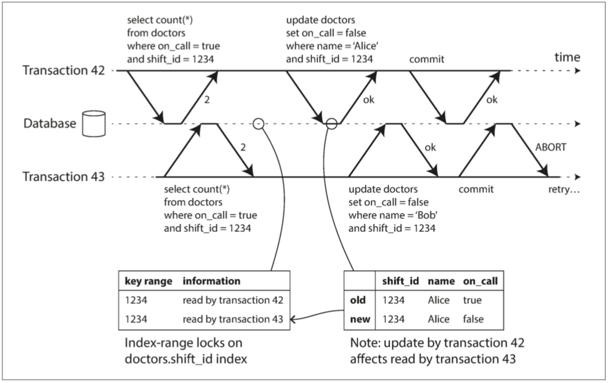

事务
SQL-92 标准定义了 4 种隔离级别：读未提交 (READ UNCOMMITTED)、读已提交 (READ COMMITTED)、可重复读 (REPEATABLE READ)、串行化 (SERIALIZABLE)。详见下表：
隔离级别 脏写 脏读 不可重复读(fuzzy read) 幻读（Phantom） READ UNCOMMITTED Not Possible Possible Possible Possible READ COMMITTED Not Possible Not possible Possible Possible REPEATABLE READ Not Possible Not possible Not possible Possible SERIALIZABLE Not Possible Not possible Not possible Not possible
在数据系统的残酷现实中，很多事情都可能出错：
- 数据库软件、硬件可能在任意时刻发生故障（包括写操作进行到一半时）。
- 应用程序可能在任意时刻崩溃（包括一系列操作的中间）。
- 网络中断可能会意外切断数据库与应用的连接，或数据库之间的连接。
- 多个客户端可能会同时写入数据库，覆盖彼此的更改。
- 客户端可能读取到无意义的数据，因为数据只更新了一部分。
- 客户端之间的竞争条件可能导致令人惊讶的错误。
事务（transaction）是应用程序将多个读写操作组合成一个逻辑单元的一种方式
- 整个事务要么成功 提交（commit），要么失败 中止（abort）或 回滚（rollback）；
- 如果失败，应用程序可以安全地重试；不用担心部分失败的场景；
并不是所有的应用都需要事务，有时候弱化事务保证、或完全放弃事务也是有好处的（例如，为了获得更高性能或更高可用性）。
本章将研究许多出错案例，并探索数据库用于防范这些问题的算法。
- 数据库如何实现 读已提交（read committed），快照隔离（snapshot isolation） 和 可串行化（serializability） 等隔离级别。
- 深入 并发控制 的领域，讨论各种可能发生的竞争条件，来描述这些隔离等级；
- 脏写：一个客户端覆盖写入了另一个客户端尚未提交的写入。几乎所有的事务实现都可以防止脏写。
- 脏读：一个客户端读取到另一个客户端尚未提交的写入。读已提交 或更强的隔离级别可以防止脏读。
- 读偏差（不可重复读）：在同一个事务中，客户端在不同的时间点会看见数据库的不同状态（读取到刚提交的写入）。
- 快照隔离用于解决该问题，通常采用 多版本并发控制（MVCC）实现；
- 丢失更新：两个客户端同时执行 读取 - 修改 - 写入序列（在一个事务中），如计数器累加。
- 写操作，在没有合并另一个写入变更情况下，直接覆盖了另一个写操作的结果
- 快照隔离的一些实现可以自动防止这种异常，而另一些实现则需要手动锁定（
SELECT FOR UPDATE）
- 幻读：一个事务中的写入改变另一个事务的搜索查询的结果
- 快照隔离避免了只读查询中幻读，但在读写事务中，会导致写入偏差的情况，需要使用索引范围锁定；
- 写偏差：一个事务读取一些东西，根据它所看到的值作出决定，并将该决定写入数据库。但写入时，其前提不再真实。
- 只有可串行化的隔离才能防止这种异常。
弱隔离级别可以防止其中一些异常情况，但要求应用程序开发人员手动处理剩余那些（例如，使用显式锁定）。
只有可串行化的隔离才能防范所有这些问题，有三种不同方法实现可串行化事务：
- 字面意义上的串行执行：单个CPU串行处理，要求每个事务执行速度快，且事务的吞吐量低；
- 两阶段锁定（2PL）：可串行化实现的标准方式，但许多应用出于性能问题的考虑避免使用它
- 可串行化快照隔离（SSI）：乐观算法，允许事务执行而无需阻塞，事后检查如果执行不可串行化，则中止事务。
本章同时适用于单机数据库与分布式数据库；在 第八章 中将重点讨论仅出现在分布式系统中的特殊挑战。
事务的棘手概念
随着这种新型分布式数据库的炒作，人们普遍认为事务是可伸缩性的对立面，任何大型系统都必须放弃事务以保持良好的性能和高可用性\(^{[1,2]}\)。另一方面，数据库厂商有时将事务保证作为 “重要应用” 和 “有价值数据” 的基本要求。这两种观点都是 纯粹的夸张。
与其他技术设计选择一样，事务有其优势和局限性，需要进一步了解这些权衡。
ACID的含义
ACID 由 Theo Härder 和 Andreas Reuter 于 1983 年提出，旨在为数据库中的容错机制建立精确的术语。
- 不同数据库的 ACID 实现并不相同，关于 隔离性 的含义就有许多含糊不清\(^{[3]}\)；
符合 ACID 标准的系统有时被称为 BASE：
- 基本可用性（Basically Available），软状态（Soft State） 和 最终一致性（Eventual consistency）\(^{[4]}\)
- 比 ACID 的定义更加模糊，似乎 BASE 的唯一合理的定义是 “不是 ACID”
原子性（Atomicity）
ACID 的原子性并不是关于 并发，描述如果几个进程试图同时访问相同的数据会发生什么情况属于隔离性。
原子性：能够在错误时中止事务，丢弃该事务进行的所有写入变更的能力
- 如果事务被 中止（abort），应用程序可以确定它没有改变任何东西，所以可以安全地重试
一致性（Consistency）
一致性这个词被赋予太多含义：
- 在 第五章 中，我们讨论了副本一致性，以及异步复制系统中的最终一致性问题（请参阅 “复制延迟问题”）。
- 一致性哈希 是某些系统用于重新分区的一种分区方法。
- 在 CAP 定理 中，一致性一词用于表示 线性一致性。
- 在 ACID 的上下文中，一致性 是指数据库在应用程序的特定概念中处于 “良好状态”。
ACID 一致性的概念是，对数据的一组特定约束必须始终成立，即 不变式（invariants）。
-
一致性（在 ACID 意义上）是应用程序的属性，字母 C 不属于 ACID1
-
应用可能依赖数据库的原子性和隔离性来实现一致性，但这并不仅取决于数据库;
隔离性（Isolation）
并发 问题（竞争条件，即 race conditions）：多个客户端同时访问相同的数据库记录。
- 如下图 7-1 所示：假设你有两个客户端同时在数据库中增长一个计数器，由于竞态条件，实际上只增至 43。

隔离性：意味着同时执行的事务是相互隔离的
- 传统的数据库教科书将隔离性形式化为 可串行化（Serializability）
- 确保当多个事务被提交时，结果与它们串行运行（一个接一个）是一样的，尽管实际上它们可能是并发运行的\(^{[6]}\)
- 实践中很少会使用可串行的隔离，因为有性能损失，在 “弱隔离级别” 中研究快照隔离和其他形式的隔离。
持久性（Durability）
持久性 是一个承诺，即一旦事务成功完成，即使发生硬件故障或数据库崩溃，写入的任何数据也不会丢失。
- 单节点数据库：数据已被写入非易失性存储设备，还包括预写日志或类似的文件；
- 带复制的数据库：数据已成功复制到一些节点；
为了提供持久性保证，数据库必须等到这些写入或复制完成后，才能报告事务成功提交。
- 完美的持久性是不存在的 ：如果所有硬盘和所有备份同时被销毁
复制与持久性
在历史上，持久性意味着写入归档磁带。后来它被理解为写入磁盘或 SSD。再后来它又有了新的内涵即 “复制（replication）”。
没有哪种实现是完美的：
- 写入磁盘然后机器宕机：即使数据未丢失，仍需等待机器修复或者磁盘迁移。复制系统可以保持可用性；
- 一个相关性故障（停电，或一个特定输入导致所有节点崩溃的 Bug）可能会一次性摧毁所有副本，内存数据库仍要跟磁盘打交道；
- 在异步复制系统中，当主库不可用时，最近的写入操作可能会丢失（参阅「处理节点宕机」）；
- 当电源突然断电时，特别是固态硬盘，有证据显示有时会违反应有的保证：甚至 fsync 也不能保证正常工作\(^{[7]}\)。硬盘固件可能有错误，就像任何其他类型的软件一样\(^{[8,9]}\)。
- 存储引擎和文件系统之间的微妙交互可能会导致难以追踪的错误，并可能导致磁盘上的文件在崩溃后被损坏\(^{[10,11]}\)。
- 磁盘上的数据可能会在没有检测到的情况下逐渐损坏\(^{[12]}\)。需要尝试从历史备份中恢复数据。
- 固态硬盘的研究发现，在运行的前四年中，30% 到 80% 的硬盘会产生至少一个坏块\(^{[13]}\)。相比固态硬盘，磁盘的坏道率较低，但完全失效的概率更高。
- 如果 SSD 断电，可能会在几周内开始丢失数据，具体取决于温度\(^{[14]}\)。
在实践中，没有一种技术可以提供绝对保证。只有各种降低风险的技术，包括写入磁盘，复制到远程机器和备份 —— 它们可以且应该一起使用。与往常一样，最好抱着怀疑的态度接受任何理论上的 “保证”。
单对象和多对象操作
假设你想同时修改多个对象（行，文档，记录）。通常需要 多对象事务（multi-object transaction） 来保持多块数据同步。
示例：执行以下查询来显示用户未读邮件数量：
- 单独的字段存储未读邮件的数量（一种反规范化）：新消息写入时，需要同时修改未读计数器；
- 下图是违反隔离性的示例：用户 2 看到邮件列表里显示有未读消息，但计数器显示为零未读消息；

- 下面是对原子性的要求：如果对计数器的更新失败，事务将被中止，并且插入的电子邮件将被回滚。

多对象事务需要某种方式来确定哪些读写操作属于同一个事务。
- 关系型数据库：基于客户端与数据库服务器的 TCP 连接
-
在任何特定连接上，
BEGIN TRANSACTION和COMMIT语句之间的所有内容，被认为是同一事务的一部分2 -
许多非关系数据库并没有将这些操作组合在一起的方法
- 即使存在多对象 API（例如，某键值存储可能具有在一个操作中更新几个键的 multi-put 操作），但这并不一定意味着它具有事务语义
单对象写入
当单个对象发生改变时，原子性和隔离性也是适用的：例如，写入 20KB 的 JSON 文档
- 如果在发送第一个 10 KB 之后网络连接中断，数据库是否存储了不可解析的 10KB JSON 片段？
- 如果在数据库正在覆盖磁盘上的前一个值的过程中电源发生故障，是否最终将新旧值拼接在一起？
- 如果另一个客户端在写入过程中读取该文档，是否会看到部分更新的值？
存储引擎一个几乎普遍的目标是：对单节点上的单个对象（例如键值对）上提供原子性和隔离性。
- 原子性：可以通过使用日志来实现崩溃恢复；
- 隔离性：使用每个对象上的锁来实现隔离（每次只允许一个线程访问对象） ；
一些数据库也提供更复杂的原子操作3：如自增操作，CAS 操作
- 防止在多个客户端尝试同时写入同一个对象时丢失更新（请参阅 “防止丢失更新”）；
- CAS 以及其他单一对象操作被称为 “轻量级事务”，不是通常意义上的事务；
事务通常被理解为，将多个对象上的多个操作合并为一个执行单元的机制。
多对象事务的需求
许多分布式数据存储已经放弃了多对象事务，因为多对象事务很难跨分区实现，而且在需要高可用性或高性能的情况下。
- 但在分布式数据库中实现事务，并没有什么根本性的障碍。第九章 将讨论分布式事务的实现。
许多其他场景需要协调写入几个不同的对象：需要多对象事务
- 关系数据模型中的外键引用：当插入几个相互引用的记录时，外键必须是正确的和最新的；
- 文档数据模型：缺乏连接功能的文档数据库会鼓励非规范化（请参阅 “关系型数据库与文档数据库在今日的对比”）；
- 次级索引的数据库：每次更改值时都需要更新索引；
这些应用仍然可以在没有事务的情况下实现。然而，没有原子性，错误处理就要复杂得多，缺乏隔离性，就会导致并发问题。
处理错误和中止
无主复制 的数据存储，主要是在 “尽力而为” 的基础上进行工作：
- 从错误中恢复是应用程序的责任：数据库将做尽可能多的事，运行遇到错误时，它不会撤消它已经完成的事情；
错误发生不可避免，但许多软件开发人员倾向于只考虑乐观情况，而不是错误处理的复杂性：
- 像 Rails 的 ActiveRecord 和 Django 这样的 对象关系映射（ORM, object-relation Mapping） 框架不会重试中断的事务；
- 从堆栈向上传播的异常，用户拿到一个错误信息
- 一般系统都是中止事务，并返回异常，而不是进行重试，是否能够重试需要在应用层做判断（见下面的理由）；
尽管重试一个中止的事务是一个简单而有效的错误处理机制，但它并不完美：
- 网络故障导致执行多次：事务执行成功但服务器跟客户端确认时网络故障，客户端认为提交失败，进行重试，导致执行两次；
- 负载过高：如果错误是由于负载过大造成的，则重试事务将使问题变得更糟，需要限制重试次数（指数退避算法）；
- 仅临时性错误需要重试：死锁，异常情况，临时性网络中断和故障切换等错误才值得重试，永久性错误（例如，违反约束）无意义；
- 外部系统的副作用：事务在数据库之外有副作用，如果确保多个不同的系统一起提交或放弃，使用两阶段提交；
弱隔离级别
当一个事务读取由另一个事务同时修改的数据时，或者当两个事务试图同时修改相同的数据时，并发问题（竞争条件）才会出现。
- 并发 BUG 在特殊时序下才会触发，通常很难重现4。
数据库一直试图通过提供 事务隔离（transaction isolation） 来隐藏应用程序开发者的并发问题。
- 可串行的（serializable） 隔离：保证事务的效果如同串行运行一样；
- 可串行的隔离 会有性能损失，许多数据库不愿意支付这个代价\(^{[15]}\)；
系统通常使用较弱的隔离级别来防止一部分，而不是全部的并发问题。
- 这些隔离级别难以理解，并且会导致微妙的错误，但是它们仍然在实践中被使用\(^{[16]}\)
读已提交
最基本的事务隔离级别是 读已提交（Read Committed）5
- 从数据库读时，只能看到已提交的数据（没有 脏读，即 dirty reads）。
- 写入数据库时，只会覆盖已提交的数据（没有 脏写，即 dirty writes）。
没有脏读
脏读（dirty reads）\(^{[17]}\)：一个事务已经将一些数据写入数据库，但事务还没有提交或中止。另一个事务可以看到未提交的数据。
在 读已提交 隔离级别运行的事务必须防止脏读：
- 事务的任何写入操作只有在该事务提交时才能被其他人看到（然后所有的写入操作都会立即变得可见）
- 下图 7-4 是示例，User 1 未 commit 之前，User 2 看到的 x 的值永远是 2；

防止脏读的原因：
- 部分更新：如果事务需要更新多个对象，脏读取意味着另一个事务可能会只看到一部分更新。
- 部分更新状态的数据库会让用户困惑，并可能导致其他事务做出错误的决定；
- 回滚：如果事务中止，则所有写入操作都需要回滚；
- 允许脏读，那就意味着一个事务可能会看到稍后需要回滚的数据，即从未实际提交给数据库的数据；
没有脏写
脏写（dirty write）\(^{[18]}\)：先前的写入是尚未提交事务的一部分，使得后面的写入覆盖了一个尚未提交的值。
在 读已提交 的隔离级别上运行的事务必须防止脏写，通常是延迟第二次写入，直到第一次写入事务提交或中止为止。
脏写防止的问题：
- 如果事务更新多个对象，脏写会导致不好的结果：如下图所示，出现销售是属于 Bob 的（因为他成功更新了商品列表），但发票却寄送给了 Alice（因为她成功更新了发票表）的问题。

脏写不能解决之前隔离性中提到的两个计数器增量之间的竞争状态：
- 第二次写入发生在第一个事务提交后，所以它不是一个脏写，但是值没有正确计算；
实现读已提交
读已提交 是一个非常流行的隔离级别。这是 Oracle 11g、PostgreSQL、SQL Server 2012、MemSQL 和其他许多数据库的默认设置\(^{[15]}\)。
数据库通过使用 行锁（row-level lock） 来防止脏写：
- 事务想要修改特定对象（行或文档）时，先获得该对象的锁。然后必须持有该锁直到事务被提交或中止；
- 如果另一个事务要写入同一个对象，则必须等到第一个事务提交或中止后，才能获取该锁并继续。
防止脏读：要求读锁会影响性能，因此多数数据库使用图 7-4 的方式防止脏读
- 对于写入的每个对象，数据库都会记住旧的已提交值，和由当前持有写入锁的事务设置的新值
快照隔离和可重复读
读已提交隔离级别，仍然有很多地方可能会产生并发错误。
- 下图 7- 6 说明了读已提交时可能发生的问题：Alice两个账户各500 美元，有一笔事务从她的一个账户转移了 100 美元到另一个账户
- 在收到付款之前先看到一个账户的余额（收款账户，余额仍为 500 美元），在发出转账之后再看到另一个账户的余额（付款账户，新余额为 400 美元）
- 对 Alice 来说，现在她的账户似乎总共只有 900 美元

不可重复读（nonrepeatable read） 或 读取偏差（read skew）：在一个事务中，读取了其他事务更改的数据，针对update操作
- 如果 Alice 在事务结束时再次读取账户 1 的余额，她将看到与她之前的查询中看到的不同的值（600 美元）。
在读已提交的隔离条件下，不可重复读 被认为是可接受的，但有些情况下，不能容忍这种暂时的不一致：
- 备份：备份进程运行时，数据库仍然会接受写入操作。因此备份可能会包含一些旧的部分和一些新的部分，备份数据恢复时，不一致就会变成永久；
- 分析查询和完整性检查：一个查询，扫描大部分的数据库或者定期完整性检查（即监视数据损坏）的一部分，如果在不同时间点观察数据库的不同部分，则可能会返回没有意义的结果；
快照隔离（snapshot isolation）\(^{[18]}\)是解决不可重复读的方案：每个事务都从数据库的 一致快照（consistent snapshot） 中读取
-
事务可以看到事务开始时在数据库中提交的所有数据。即使这些数据随后被另一个事务更改，每个事务也只能看到该特定时间点的旧数据。
-
快照隔离是一个流行的功能：PostgreSQL、使用 InnoDB 引擎的 MySQL、Oracle、SQL Server 等都支持；
实现快照隔离
快照隔离的一个关键原则：读不阻塞写，写不阻塞读：
- 通常使用写锁来防止脏写，读取不需要加锁；
- 在处理一致性快照上的长时间查询时，可以正常地同时处理写入操作，且两者间没有任何锁争用
多版本并发控制（MVCC, multi-version concurrency control）
- 数据库必须可能保留一个对象的几个不同的提交版本；
- 实现提供 读已提交 的隔离级别，而不提供 快照隔离，那么保留一个对象的两个版本就足够；
下图说明 PostgreSQL 如何实现基于 MVCC 的快照隔离\(^{[19]}\)：
- 当一个事务开始时，它被赋予一个唯一的永远增长6的事务 ID（
txid）：当事务向数据库写入时，它所写入的数据都会被标记上写入者的事务 ID。 - 当事务 12 从账户 2 读取时，它会看到 $500 的余额，事务 12 看不到事务 13 执行的删除（见下面的可见性规则）

表中的每行都会有created_by和deleted_by字段7：
created_by：其中包含将该行插入到表中的的事务 ID；deleted_by：最初是空的，将deleted_by字段设置为请求删除的事务的 ID 来标记为删除；- 当确定没有事务可以再访问已删除的数据时，数据库中的垃圾收集过程会将所有带有删除标记的行移除，并释放其空间
- UPDATE 操作在内部翻译为 DELETE 和 INSERT；
观察一致性快照的可见性规则
当一个事务从数据库中读取时，事务 ID 用于决定它可以看见哪些对象，看不见哪些对象。一致的数据库快照的可见性规则如下：
- 在每次事务开始时，数据库列出当时所有其他（尚未提交或尚未中止）的事务清单，即使之后提交了，这些事务已执行的任何写入也都会被忽略；
- 被中止事务所执行的任何写入都将被忽略；
- 由具有较晚事务 ID（即，在当前事务开始之后开始的）的事务所做的任何写入都被忽略，而不管这些事务是否已经提交；
- 所有其他写入，对应用都是可见的。
这些规则适用于创建和删除对象。
由于从来不原地更新值，而是每次值改变时创建一个新的版本，数据库可以在提供一致快照的同时只产生很小的额外开销。
索引和快照隔离
索引如何在多版本数据库中工作
第一种方案：索引简单地指向对象的所有版本
- 需要索引查询来过滤掉当前事务不可见的任何对象版本；当垃圾收集删除任何事务不再可见的旧对象版本时，相应的索引条目也可以被删除；
- 如果同一对象的不同版本可以放入同一个页面中，PostgreSQL 的优化可以避免更新索引\(^{[19]}\)。
第二种方案：仅追加 / 写时拷贝（append-only/copy-on-write） 的变体，在 CouchDB、Datomic 和 LMDB 中使用
- 在更新时不覆盖树的页面，而为每个修改页面创建一份副本；从父页面直到树根都会级联更新，以指向它们子页面的新版本。
- 任何不受写入影响的页面都不需要被复制，并且保持不变\(^{[20-22]}\)
使用仅追加的 B 树 时：
- 每个写入事务（或一批事务）都会创建一棵新的 B 树，当创建时，从该特定树根生长的树就是数据库的一个一致性快照；
- 没必要根据事务 ID 过滤掉对象，因为后续写入不能修改现有的 B 树；它们只能创建新的树根；
- 需要一个负责压缩和垃圾收集的后台进程。
可重复读与命名混淆
快照隔离在 Oracle 中称为 可串行化（Serializable） 的，在 PostgreSQL 和 MySQL 中称为 可重复读（repeatable read）。
防止丢失更新
并发的写入事务之间有几种有趣的冲突。其中最著名的是 丢失更新（lost update） 问题，如图 7-1 的两个并发计数器的增量的例子：
- 应用层的每个事务都是：读取 - 修改 - 写入序列，在多线程开发中这是个基本的并发冲突问题。
原子写
数据库提供了原子更新操作，从而消除了在应用程序代码中执行读取 - 修改 - 写入序列的需要：
- 下面的指令在大多数关系数据库中是并发安全
- 原子操作通常通过在读取对象时，获取其上的排它锁来实现，更新完成之前没有其他事务可以读取它；
显式锁定
有些情况需要应用程序显式地锁定将要更新的对象：如读取->判断->修改->写入的逻辑
-
如多人游戏中防止两个人同时移动同一个棋子：需要进行一些逻辑判断，必须通过事务进行，不能使用单个的原子操作；
-
显式锁定行以防止丢失更新：
FOR UPDATE子句告诉数据库应该对该查询返回的所有行加锁
BEGIN TRANSACTION;
SELECT * FROM figures
WHERE name = 'robot' AND game_id = 222
FOR UPDATE;
-- 检查玩家的操作是否有效，然后更新先前 SELECT 返回棋子的位置。
UPDATE figures SET position = 'c4' WHERE id = 1234;
COMMIT;
- 需要仔细考虑应用逻辑。忘记在代码某处加锁很容易引入竞争条件。
自动检测丢失的更新
原子操作和锁是通过强制 读取 - 修改 - 写入序列 按顺序发生，来防止丢失更新的方法。
另一种方法是允许它们并行执行，如果事务管理器检测到丢失更新，则中止事务并强制它们重试其 读取 - 修改 - 写入序列。
- 数据库可以结合快照隔离高效地执行此检查
- 如 PostgreSQL 的可重复读，Oracle 的可串行化都会自动检测到丢失更新，并中止惹麻烦的事务；
- 但 MySQL/InnoDB 的可重复读并不会检测 丢失更新\(^{[16]}\)；
比较并设置（CAS）
在不提供事务的数据库中，有时会发现一种原子操作：比较并设置（CAS）
- 如果数据库允许
WHERE子句从旧快照中读取，则此语句可能无法防止丢失更新，因为即使发生了另一个并发写入，WHERE条件也可能为真
-- 根据数据库的实现情况，这可能安全也可能不安全
UPDATE wiki_pages SET content = '新内容' WHERE id = 1234 AND content = '旧内容';
冲突解决和复制
在复制数据库中（请参阅 第五章），是从另一个维度来防止丢失的更新：
- 在多个节点上存在数据副本，并且在不同节点上的数据可能被并发地修改，因此需要采取一些额外的步骤来防止丢失更新；
- 基于锁或 CAS 操作的技术（假定只有一个最新的数据副本）不适用于这种情况，因为无法保证只有一个最新数据的副本；
复制数据库中的一种常见方法是允许并发写入创建多个冲突版本的值（也称为兄弟），并使用应用代码或特殊数据结构在事实发生之后解决和合并这些版本。
- 原子操作可以在复制的上下文中很好地工作，尤其当它们具有可交换性时，如递增操作/集合添加元素操作；
- 当不同的客户端同时更新一个值时，Riak 自动将更新合并在一起，以免丢失更新\(^{[23]}\)。
- 最后写入胜利（LWW）的冲突解决方法很容易丢失更新，但其是许多数据库中默认的方案；
写入偏差与幻读
当不同的事务并发地尝试写入相同的对象时，会出现这竞争条件：脏写 和 丢失更新。
但并发写入间可能发生的竞争条件还没有完，以下是更微妙的示例，
- 医生轮班管理程序。医院通常会同时要求几位医生待命，但底线是至少有一位医生在待命；
- Alice 和 Bob 是两位值班医生，恰好在同一时间点击按钮下班，如下图所示：

由于数据库使用快照隔离，两次检查都返回 2 ，所以两个事务都进入下一个阶段。两个事务都成功提交了，现在没有医生值班，违反了至少有一名医生在值班的要求。
写入偏差的特征
这种异常称为 写入偏差 \(^{[18]}\)：
- 不是脏写，也不是丢失更新，因为这两个事务正在更新两个不同的对象（Alice 和 Bob 各自的待命记录）；
- 显然是一个竞争条件：如果两个事务一个接一个地运行，那么第二个医生就不能歇班；
可以将写入偏差视为丢失更新问题的一般化。
- 两个事务读取相同的对象，然后更新其中一些对象（不同的事务可能更新不同的对象），则可能发生写入偏差；
- 多个事务更新同一个对象的特殊情况下，就会发生脏写或丢失更新（取决于时序）；
对于写入偏差，可选的方法更受限制：
- 由于涉及多个对象，单对象的原子操作不起作用；
- 在一些快照隔离的实现中，自动检测丢失更新对此并没有帮助
- 如PG中可重复读等都不会自动检测写入偏差\(^{[16]}\)，动防止写入偏差需要真正的可串行化隔离（请参阅 “可串行化”）。
如果无法使用可串行化的隔离级别，则此情况下的次优选项可能是显式锁定事务所依赖的行，如下所示
FOR UPDATE告诉数据库锁定返回的所有行（排他锁）以用于更新
BEGIN TRANSACTION;
SELECT * FROM doctors WHERE on_call = TRUE AND shift_id = 1234
FOR UPDATE;
UPDATE doctors SET on_call = FALSE
WHERE name = 'Alice' AND shift_id = 1234;
COMMIT;
写入偏差的更多例子
写入偏差可能发生在更多场景下：
- 会议室预订系统：不能在同一时间对同一个会议室进行多次的预订
- 先检查是否有重叠的，如果没有则写入；该方案不能用
SELECT FOR UPDATE无法避免； - 多人游戏：使用一个锁来防止丢失更新（确保两个玩家不能同时移动同一个棋子），但不能防止两个玩家将棋子移动到同一个位置；
- 抢注用户名：两个用户可能会尝试同时创建具有相同用户名的帐户，幸运的是唯一约束可以防止；
- 防止双重开支：检查用户的支付数额不超过其余额，可能会发生两个支出项目同时插入，一起导致余额变为负值。
此时，SELECT FOR UPDATE来使事务安全并避免写入偏差，但其具备局限性：
- 检查是否 不存在 某些满足条件的行，写入会 添加 一个匹配相同条件的行；
- 因此查询没有返回任何行，则
SELECT FOR UPDATE锁不了任何东西，无法锁住即将要插入的行；
导致写入偏差的幻读
一个事务中的写入改变另一个事务的搜索查询的结果，被称为 幻读\(^{[24]}\)。
- 快照隔离避免了只读查询中幻读，但没有解决读写事务中的幻读；
所有这些例子都遵循类似的模式：
- 一个
SELECT查询找出符合条件的行，并检查是否符合一些要求 - 按照第一个查询的结果，应用代码决定是否继续；
- 如果应用决定继续操作，就执行写入（插入、更新或删除），并提交事务。
写入的效果改变了步骤 2 中的先决条件。
- 如果步骤1的查询没有返回任何行，则
SELECT FOR UPDATE锁不了任何东西
物化冲突
如果幻读的问题是没有对象可以加锁，也许可以人为地在数据库中引入一个锁对象？
- 在会议室预订的场景，创建一个关于时间槽和房间的表，表中的每一行对应于特定时间段（例如 15 分钟）的特定房间；
- 创建预订的事务可以锁定（
SELECT FOR UPDATE）表中与所需房间和时间段对应的行； - 获得锁定之后，它可以检查重叠的预订并像以前一样插入新的预订；
物化冲突（materializing conflicts），它将幻读变为数据库中一组具体行上的锁冲突\(^{[25]}\)
- 弄清楚如何物化冲突可能很难，也很容易出错，物化冲突应被视为最后的手段；
- 在大多数情况下。可串行化（Serializable） 的隔离级别是更可取的。
可串行化
可串行化（Serializability） 隔离通常被认为是最强的隔离级别，其技术有以下三种实现方式：
- 字面意义上地串行顺序执行事务（请参阅 “真的串行执行”）
- 两阶段锁定（2PL, two-phase locking），几十年来唯一可行的选择（请参阅 “两阶段锁定”）
- 乐观并发控制技术，例如 可串行化快照隔离（serializable snapshot isolation，请参阅 “可串行化快照隔离”）
后续在单节点数据库的背景下讨论这些技术，第九章会研究如何将他们推广到涉及分布式系统中多个节点的事务。
真的串行执行
在单个线程上按顺序一次只执行一个事务。但数据库设计人员只是在 2007 年左右才决定，单线程循环执行事务是可行的\(^{[26]}\)
- RAM 足够便宜，可以将完整的活跃数据集保存在内存中（请参阅 “在内存中存储一切”），此时事务处理的执行速度要比等待数据从磁盘加载时快得多；
- OLTP 事务通常很短，而且只进行少量的读写操作请参阅 “事务处理与分析处理”）；OLAP 通常都是只读的，可以在快照隔离上运行；
串行执行事务的方法在 VoltDB/H-Store、Redis 和 Datomic 中实现\(^{27,28,29}\)。单线程执行避免锁的协调开销，有时可以比支持并发的系统性能更好，但其吞吐量仅限于单个 CPU 核的吞吐量。
在存储过程中封装事务
交互式事务：事务仍然以交互式的客户端 / 服务器风格执行，一次一个语句。应用程序进行查询，读取结果，可能根据第一个查询的结果进行另一个查询。
- 应用程序和数据库之间的网络通信耗费了大量的时间，如果不允许在数据库中进行并发处理，则吞吐量（针对事务）会非常糟糕；
具有单线程串行事务处理的系统不允许交互式的多语句事务，应用程序必须提前将整个事务代码作为存储过程提交给数据库：
- 事务所需的所有数据都在内存中，则存储过程可以非常快地执行，而不用等待任何网络或磁盘 I/O
图 7-9 交互式事务和存储过程之间的区别（使用图 7-8 的示例事务）

存储过程的优点和缺点
存储过程在关系型数据库的问题：
- 不同的存储过程语言，如 Oracle 有 PL/SQL，PostgreSQL 有 PL/pgSQL等，生态差，难以使用；
- 代码难以管理：与应用服务器相比，它更难调试，更难以保持版本控制和部署，更难测试；
- 性能：写得不好的存储过程（例如，占用大量内存或 CPU 时间）会比在应用服务器中相同的代码造成更多的麻烦。
现代的存储过程实现放弃了 PL/SQL，而是使用现有的通用编程语言：VoltDB 使用 Java 或 Groovy，Datomic 使用 Java 或 Clojure，而 Redis 使用 Lua。
存储过程与内存存储，使得在单个线程上执行所有事务变得可行。
- 不需要等待 I/O，且避免了并发控制机制的开销，它们可以在单个线程上实现相当好的吞吐量。
VoltDB 还使用存储过程进行复制：在每个节点上执行相同的存储过程
- 要求存储过程是 确定性的，例如当前时间的API需要通过特殊的确定性API实现；
分区
对于写入吞吐量较高的应用，单线程事务处理器可能成为一个严重的瓶颈。
- 对数据进行分区，可以伸缩至多个 CPU 核心和多个节点；
需要访问多个分区的任何事务，数据库必须在触及的所有分区之间协调事务。存储过程需要跨越所有分区锁定执行，以确保整个系统的可串行性。
- 跨分区事务具有额外的协调开销，所以它们比单分区事务慢得多；如 VoltDB 大约每秒1000个跨分区写入，比单分区低几个数量级；
事务是否可以是划分至单个分区很大程度上取决于应用数据的结构。
- 简单的键值数据通常可以非常容易地进行分区，但是具有多个次级索引的数据可能需要大量的跨分区协调
串行执行小结
在特定约束条件下，真的串行执行事务，已经成为一种实现可串行化隔离等级的可行办法。
- 每个事务都必须小而快，只要有一个缓慢的事务，就会拖慢所有事务处理。
- 仅限于活跃数据集可以放入内存的情况。如果需要在单线程执行的事务中访问这些磁盘中的数据，系统就会变得非常慢8。
- 写入吞吐量必须低到能在单个 CPU 核上处理，如若不然，事务需要能划分至单个分区，且不需要跨分区协调。
- 跨分区事务是可能的，但是它们能被使用的程度有很大的限制。
两阶段锁定
大约 30 年来，在数据库中只有一种广泛使用的串行化算法：两阶段锁定（2PL，two-phase locking）。
一次性锁协议：事务开始时，即一次性申请所有的锁，之后不会再申请任何锁，事务结束后释放所有锁；
- 一次性锁协议不会产生死锁的问题，但事务的并发度不高。
两阶段锁协议：整个事务分为两个阶段，前一个阶段为加锁，后一个阶段为解锁。
- 加锁阶段，事务只能加锁，也可以操作数据，但不能解锁，直到事务释放第一个锁，就进入解锁阶段；
- 解锁阶段，此过程中事务只能解锁，也可以操作数据，不能再加锁；

2PL 事务具有较高的并发度，因为解锁不必发生在事务结尾，但会有死锁行为和级联中止 (cascading aborts)

2PL 还有一个增强版变种，Strong Strict 2PL(SSPL)，也称Rigorous 2PL，后者每个事务在结束之前，其写过的数据不能被其它事务读取或者重写，如下图所示：

2PL不是2PC
请注意，虽然两阶段锁定（2PL）听起来非常类似于两阶段提交（2PC），但它们是完全不同的东西。
两阶段锁定对锁的要求更强得多。只要没有写入，就允许多个事务同时读取同一个对象。但对象只要有写入（修改或删除），就需要 独占访问（exclusive access） 权限：
- 如果事务 A 读取了一个对象，并且事务 B 想要写入该对象，那么 B 必须等到 A 提交或中止才能继续（这确保 B 不能在 A 底下意外地改变对象）。
- 如果事务 A 写入了一个对象，并且事务 B 想要读取该对象，则 B 必须等到 A 提交或中止才能继续（像图 7-1 那样读取旧版本的对象在 2PL 下是不可接受的）。
2PL 和快照隔离之间的关键区别：
- 2PL 中，写入不仅会阻塞其他写入，也会阻塞读，反之亦然
- 快照隔离使得 读不阻塞写，写也不阻塞读
实现两阶段锁
2PL 用于 MySQL（InnoDB）和 SQL Server 中的可串行化隔离级别，以及 DB2 中的可重复读隔离级别。
读与写的阻塞是通过为数据库中每个对象添加锁来实现的。锁可以处于 共享模式（shared mode） 或 独占模式（exclusive mode），类似于读写锁。
-
若事务要写入一个对象，它必须首先以独占模式获取该锁。（类似于写锁）
-
若事务要读取对象，则须先以共享模式获取锁。（类似于读锁）
-
如果事务先读取再写入对象，则它可能会将其共享锁升级为独占锁。
-
如果此时其它事务具备读锁，那么能升级么？导致死锁么？
-
MySQL 需要显示声明
SELECT用什么锁，每个事务都是读锁+写锁的SQL会导致死锁，如下面的示例 -
事务获得锁之后，必须继续持有锁直到事务结束（提交或中止）
死锁：事务 A 等待事务 B 释放它的锁，反之亦然。
数据库会自动检测事务之间的死锁，并中止其中一个，以便另一个继续执行。被中止的事务需要由应用程序重试。
两阶段锁定的性能
两阶段锁定下的事务吞吐量与查询响应时间要比弱隔离级别下要差得多。
- 一部分是由于获取和释放所有这些锁的开销，但更重要的是由于并发性的降低；
- 运行 2PL 的数据库可能具有相当不稳定的延迟，因为事务需要等待；
- 基于 2PL 实现的可串行化隔离级别中，死锁会出现的频繁的多（取决于事务的访问模式），重试降低性能；
谓词锁
谓词锁（predicate lock）\(^{[24]}\)类似于前面描述的共享 / 排它锁，但不属于特定的对象（例如，表中的一行），它属于所有符合某些搜索条件的对象，如：
SELECT * FROM bookings
WHERE room_id = 123 AND
end_time > '2018-01-01 12:00' AND
start_time < '2018-01-01 13:00';
- 如果事务 A 想要读取匹配某些条件的对象，必须获取查询条件上的 共享谓词锁（shared-mode predicate lock）；
- 如果事务 A 想要插入，更新或删除任何对象，则必须首先检查旧值或新值是否与任何现有的谓词锁匹配。如果事务 B 持有匹配的谓词锁，那么 A 必须等到 B 已经提交或中止后才能继续。
如果两阶段锁定包含谓词锁，则数据库将阻止所有形式的写入偏差和其他竞争条件，因此其隔离实现了可串行化。
索引范围锁
在写入偏差的更多例子中，给出示例说可以将 SQL 改下，用于锁定相关的行（排他锁），就是使用这个索引范围锁。
MySQL InnoDB 在可重复读的隔离级别中，通过 next-key lock（记录锁+间隙锁） 实现锁定
SELECT FOR UPDATE会根据不同的查询（等值/范围）情况和索引情况，用不同类型的锁
不幸的是谓词锁性能不佳：如果活跃事务持有很多锁，检查匹配的锁会非常耗时。 因此，大多数使用 2PL 的数据库实际上实现了索引范围锁（index-range locking，也称为 next-key locking\(^{[30]}\)），这是一个简化的近似版谓词锁。
使谓词匹配到一个更大的集合来简化谓词锁是安全的，任何满足原始谓词的写入也一定会满足这种更松散的近似：
- 例如在中午和下午 1 点之间预订 123 号房间的谓词锁，可以锁定 123 号房间的所有时间段，或者锁定 12:00~13:00 时间段的所有房间
在房间预订数据库中，你可能会在 room_id 列上有一个索引，并且 / 或者在 start_time 和 end_time 上有索引
- 假设你的索引位于
room_id，查找 123 号房间的现有预订，数据库将共享锁附加到这个索引项上，指示事务已搜索 123 号房间用于预订。 - 如果另一个事务想要插入、更新或删除同一个房间和 / 或重叠时间段的预订，则它将不得不更新索引的相同部分，遇到共享锁等待锁释放；
索引范围锁并不像谓词锁那样精确，但是由于它们的开销较低，所以是一个很好的折衷。
- 如果没有可以挂载范围锁的索引，数据库可以退化到使用整个表上的共享锁。
可串行化快照隔离
PG 的 Serializable 就是通过 SSI 实现的，相比 S2PL 性能有提升。
可串行化快照隔离（SSI, serializable snapshot isolation）\(^{31,32]}\) 的算法是非常有前途
- 提供了完整的可串行化隔离级别，但与快照隔离相比只有很小的性能损失；
- SSI 既用于单节点数据库（PostgreSQL9.1 以后的可串行化隔离级别），也用于分布式数据库（FoundationDB 使用类似的算法）
悲观与乐观的并发控制
两阶段锁是一种所谓的 悲观并发控制机制（pessimistic）
- 如果有事情可能出错（如另一个事务所持有的锁所表示的），最好等到情况安全后再做任何事情，类似于互斥；
- 串行执行可以称为悲观到了极致：在事务持续期间，每个事务对整个数据库（或数据库的一个分区）具有排它锁。
串行化快照隔离 是一种 乐观（optimistic） 的并发控制技术
- 如果存在潜在的危险也不阻止事务，而是继续执行事务，希望一切都会好起来；
- 当一个事务想要提交时，数据库检查是否有什么不好的事情发生（即隔离是否被违反）；
- 如果是的话，事务将被中止，并且必须重试。
乐观并发控制是一个古老的想法\(^{[33]}\)
-
其优点是：
-
如果有足够的空闲容量，并且事务之间的争用不是太高，乐观的并发控制技术往往比悲观的性能要好
-
其缺点是：
-
如果存在很多 争用（contention，即很多事务试图访问相同的对象），则表现不佳，因为这会导致很大一部分事务需要中止
-
如果系统已经接近最大吞吐量，来自重试事务的额外负载可能会使性能变差
SSI 基于快照隔离：事务中的所有读取都是来自数据库的一致性快照。
- 添加了一种算法来检测写入之间的串行化冲突，并确定要中止哪些事务
基于过时前提的决策
事务中的查询与写入可能存在因果依赖。为了提供可串行化的隔离级别，如果事务在过时的前提下执行操作，数据库必须能检测到这种情况，并中止事务。
数据库如何知道查询结果是否可能已经改变？有两种情况需要考虑：
- 检测对旧 MVCC 对象版本的读取（读之前存在未提交的写入）
- 检测影响先前读取的写入（读之后发生写入）
检测旧MVCC读取
当一个事务从 MVCC 数据库中的一致快照读时，它将忽略取快照时尚未提交的任何其他事务所做的写入。
- 下图中：事务 43 认为 Alice 的
on_call = true，因为事务 42（修改 Alice 的待命状态）未被提交。然而，在事务 43 想要提交时，事务 42 已经提交。在读一致性快照时被忽略的写入已经生效，事务 43 的前提不再为真。

解决方案：数据库需要跟踪一个事务由于 MVCC 可见性规则而忽略另一个事务的写入
- 当事务想要提交时，数据库检查是否有任何被忽略的写入现在已经被提交。如果是这样，事务必须中止。
- 为什么要等到提交？因为如果事务只是只读事务，不需要中止。通过避免不必要的中止，SSI 保留了快照隔离从一致快照中长时间读取的能力。
检测影响之前读取的写入
考虑的是另一个事务在读取数据之后修改数据，如下图所示：
- SSI 锁，类似索引范围锁，允许数据库锁定与某个搜索查询匹配的所有行的访问权，例如
WHERE shift_id = 1234，但不会阻塞其他事务。 - 事务 42 和 43 都在班次 1234 查找值班医生。如果在
shift_id上有索引，则数据库可以使用索引项 1234 来记录事务 42 和 43 读取这个数据的事实。 - 如果没有索引，这个信息可以在表级别进行跟踪
- 在一个事务完成（提交或中止），并且所有的并发事务完成之后，数据库就可以忘记它读取的数据
- 当事务写入数据库时，它必须在索引中查找最近曾读取受影响数据的其他事务
- 类似于在受影响的键范围上获取写锁，但锁并不会阻塞事务直到其他读事务完成，而只是简单通知其他事务：你们读过的数据可能不是最新的啦。
- 下图中，事务 43 通知事务 42 其先前读已过时
- 事务 42 首先提交并成功，尽管事务 43 的写影响了 42 ，但因为事务 43 尚未提交，所以写入尚未生效。
- 当事务 43 想要提交时，来自事务 42 的冲突写入已经被提交，所以事务 43 必须中止。

可串行化快照隔离的性能
一个权衡是跟踪事务的读取和写入的 粒度（granularity）
- 数据库详细地跟踪每个事务的活动（细粒度），更准确知道哪些事务需要中止，但是记账（bookkeeping）开销会很显著；
- 简略的跟踪速度更快（粗粒度），可能会导致更多不必要的事务中止。
在某些情况下，事务可以读取被另一个事务覆盖的信息：这取决于发生了什么，有时可以证明执行结果无论如何都是可串行化的。
- PostgreSQL 使用这个理论来减少不必要的中止次数\(^{[34]}\)。
与两阶段锁定相比，可串行化快照隔离的最大优点是：一个事务不需要阻塞等待另一个事务所持有的锁
与串行执行相比，可串行化快照隔离并不局限于单个 CPU 核的吞吐量
- FoundationDB 将串行化冲突的检测分布在多台机器上，允许扩展到很高的吞吐量。
- 即使数据可能跨多台机器进行分区，事务也可以在保证可串行化隔离等级的同时读写多个分区中的数据\(^{[35]}\)
中止率显著影响 SSI 的整体表现：例如长时间读取和写入数据的事务很可能会发生冲突并中止
- SSI 要求同时读写的事务尽量短（只读的长事务可能没问题）
- 对于慢事务，SSI 可能比两阶段锁定或串行执行更不敏感
参考文献
- John D. Cook: “ACID Versus BASE for Database Transactions,” johndcook.com, July 6, 2009.
- Gavin Clarke: “NoSQL's CAP Theorem Busters: We Don't Drop ACID,” theregister.co.uk, November 22, 2012.
- Peter Bailis, Alan Fekete, Ali Ghodsi, et al.: “HAT, not CAP: Towards Highly Available Transactions,” at 14th USENIX Workshop on Hot Topics in Operating Systems (HotOS), May 2013.
- Armando Fox, Steven D. Gribble, Yatin Chawathe, et al.: “Cluster-Based Scalable Network Services,” at 16th ACM Symposium on Operating Systems Principles (SOSP), October 1997.
- Theo Härder and Andreas Reuter: “Principles of Transaction-Oriented Database Recovery,” ACM Computing Surveys, volume 15, number 4, pages 287–317, December 1983. doi:10.1145/289.291
- Philip A. Bernstein, Vassos Hadzilacos, and Nathan Goodman: Concurrency Control and Recovery in Database Systems. Addison-Wesley, 1987. ISBN: 978-0-201-10715-9, available online at research.microsoft.com.
- Mai Zheng, Joseph Tucek, Feng Qin, and Mark Lillibridge: “Understanding the Robustness of SSDs Under Power Fault,” at 11th USENIX Conference on File and Storage Technologies (FAST), February 2013.
- Laurie Denness: “SSDs: A Gift and a Curse,” laur.ie, June 2, 2015.
- Adam Surak: “When Solid State Drives Are Not That Solid,” blog.algolia.com, June 15, 2015.
- Thanumalayan Sankaranarayana Pillai, Vijay Chidambaram, Ramnatthan Alagappan, et al.: “All File Systems Are Not Created Equal: On the Complexity of Crafting Crash-Consistent Applications,” at 11th USENIX Symposium on Operating Systems Design and Implementation (OSDI), October 2014.
- Chris Siebenmann: “Unix's File Durability Problem,” utcc.utoronto.ca, April 14, 2016.
- Lakshmi N. Bairavasundaram, Garth R. Goodson, Bianca Schroeder, et al.: “An Analysis of Data Corruption in the Storage Stack,” at 6th USENIX Conference on File and Storage Technologies (FAST), February 2008.
- Bianca Schroeder, Raghav Lagisetty, and Arif Merchant: “Flash Reliability in Production: The Expected and the Unexpected,” at 14th USENIX Conference on File and Storage Technologies (FAST), February 2016.
- Don Allison: “SSD Storage – Ignorance of Technology Is No Excuse,” blog.korelogic.com, March 24, 2015.
- Peter Bailis, Alan Fekete, Ali Ghodsi, et al.: “HAT, not CAP: Towards Highly Available Transactions,” at 14th USENIX Workshop on Hot Topics in Operating Systems (HotOS), May 2013.
- Martin Kleppmann: “Hermitage: Testing the 'I' in ACID,” martin.kleppmann.com, November 25, 2014.
- Jim N. Gray, Raymond A. Lorie, Gianfranco R. Putzolu, and Irving L. Traiger: “Granularity of Locks and Degrees of Consistency in a Shared Data Base,” in Modelling in Data Base Management Systems: Proceedings of the IFIP Working Conference on Modelling in Data Base Management Systems, edited by G. M. Nijssen, pages 364–394, Elsevier/North Holland Publishing, 1976. Also in Readings in Database Systems, 4th edition, edited by Joseph M. Hellerstein and Michael Stonebraker, MIT Press, 2005. ISBN: 978-0-262-69314-1
- Hal Berenson, Philip A. Bernstein, Jim N. Gray, et al.: “A Critique of ANSI SQL Isolation Levels,” at ACM International Conference on Management of Data (SIGMOD), May 1995.
- Bruce Momjian: “MVCC Unmasked,” momjian.us, July 2014.
- Nikita Prokopov: “Unofficial Guide to Datomic Internals,” tonsky.me, May 6, 2014.
- Baron Schwartz: “Immutability, MVCC, and Garbage Collection,” xaprb.com, December 28, 2013.
- J. Chris Anderson, Jan Lehnardt, and Noah Slater: CouchDB: The Definitive Guide. O'Reilly Media, 2010. ISBN: 978-0-596-15589-6
- Joel Jacobson: “Riak 2.0: Data Types,” blog.joeljacobson.com, March 23, 2014.
- Kapali P. Eswaran, Jim N. Gray, Raymond A. Lorie, and Irving L. Traiger: “The Notions of Consistency and Predicate Locks in a Database System,” Communications of the ACM, volume 19, number 11, pages 624–633, November 1976.
- Alan Fekete, Dimitrios Liarokapis, Elizabeth O'Neil, et al.: “Making Snapshot Isolation Serializable,” ACM Transactions on Database Systems, volume 30, number 2, pages 492–528, June 2005. doi:10.1145/1071610.1071615
- Michael Stonebraker, Samuel Madden, Daniel J. Abadi, et al.: “The End of an Architectural Era (It’s Time for a Complete Rewrite),” at 33rd International Conference on Very Large Data Bases (VLDB), September 2007.
- John Hugg: “H-Store/VoltDB Architecture vs. CEP Systems and Newer Streaming Architectures,” at Data @Scale Boston, November 2014.
- Robert Kallman, Hideaki Kimura, Jonathan Natkins, et al.: “H-Store: A High-Performance, Distributed Main Memory Transaction Processing System,” Proceedings of the VLDB Endowment, volume 1, number 2, pages 1496–1499, August 2008.
- Rich Hickey: “The Architecture of Datomic,” infoq.com, November 2, 2012.
- Joseph M. Hellerstein, Michael Stonebraker, and James Hamilton: “Architecture of a Database System,” Foundations and Trends in Databases, volume 1, number 2, pages 141–259, November 2007. doi:10.1561/1900000002
- Michael J. Cahill, Uwe Röhm, and Alan Fekete: “Serializable Isolation for Snapshot Databases,” at ACM International Conference on Management of Data (SIGMOD), June 2008. doi:10.1145/1376616.1376690
- Michael J. Cahill: “Serializable Isolation for Snapshot Databases,” PhD Thesis, University of Sydney, July 2009.
- D. Z. Badal: “Correctness of Concurrency Control and Implications in Distributed Databases,” at 3rd International IEEE Computer Software and Applications Conference (COMPSAC), November 1979.
- Dan R. K. Ports and Kevin Grittner: “Serializable Snapshot Isolation in PostgreSQL,” at 38th International Conference on Very Large Databases (VLDB), August 2012.
- Dave Rosenthal: “Databases at 14.4MHz,” blog.foundationdb.com, December 10, 2014.
-
乔・海勒斯坦（Joe Hellerstein）指出，在 Härder 与 Reuter 的论文中，“ACID 中的 C” 是被 “扔进去凑缩写单词的”\(^{[5]}\)，而且那时候大家都不怎么在乎一致性。 ↩
-
这并不完美。如果 TCP 连接中断，则事务必须中止。如果中断发生在客户端请求提交之后，但在服务器确认提交发生之前，客户端并不知道事务是否已提交。为了解决这个问题，事务管理器可以通过一个唯一事务标识符来对操作进行分组，这个标识符并未绑定到特定 TCP 连接。后续再 “数据库的端到端原则” 一节将回到这个主题。 ↩
-
严格地说，原子自增（atomic increment） 这个术语在多线程编程的意义上使用了原子这个词。在 ACID 的情况下，它实际上应该被称为 隔离的（isolated） 的或 可串行的（serializable） 的增量。但这就太吹毛求疵了。 ↩
-
轶事：偶然出现的瞬时错误有时称为 Heisenbug，而确定性的问题对应地称为 Bohrbugs ↩
-
某些数据库支持甚至更弱的隔离级别，称为 读未提交（Read uncommitted）。它可以防止脏写，但不防止脏读。 ↩
-
事实上，事务 ID 是 32 位整数，所以大约会在 40 亿次事务之后溢出。PostgreSQL 的 Vacuum 过程会清理老旧的事务 ID，确保事务 ID 溢出（回卷）不会影响到数据。 ↩
-
在 PostgreSQL 中，
created_by的实际名称为xmin，deleted_by的实际名称为xmax↩ -
如果事务需要访问不在内存中的数据，最好的解决方案可能是中止事务，异步地将数据提取到内存中，同时继续处理其他事务，然后在数据加载完毕时重新启动事务。这种方法被称为 反缓存（anti-caching） ↩